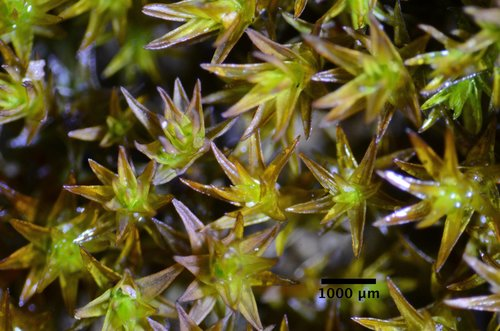

Scouleriaceae
Scouleria Moss Family
Scouleriaceae is a small family of robust, aquatic or riparian mosses found attached to rocks in streams, rivers, or splash zones. They are typically dark green to blackish, with broad leaves possessing a strong costa, and capsules borne on short setae with a distinctive peristome structure.
Overview
The Scouleriaceae family comprises a small group of mosses highly adapted to life in or near moving water. Containing the genera Scouleria and Tridontium, these plants are typically found firmly anchored to rocks in the turbulent environment of mountain streams, rivers, or lake shores, often submerged or within the splash zone. Their robust structure allows them to withstand strong currents.
These mosses often form dense, dark green to almost black tufts or mats. Their distribution is somewhat scattered, with species found primarily in western North America, and others in Europe, Asia, and Tasmania. Their specialized habitat requirements make them interesting subjects for ecological studies of riparian and aquatic ecosystems.
The taxonomic placement of Scouleriaceae has been debated. While traditionally associated with families like Grimmiaceae due to some similarities in habitat and structure, molecular studies suggest varying relationships, sometimes placing them in their own order (Scouleriales) or linking them to different groups like the Pottiales. Their unique combination of features reflects adaptation to their challenging aquatic environment.
Quick Facts
- Scientific Name: Scouleriaceae
- Common Name: Scouleria Moss Family
- Number of Genera: 2 (Scouleria, Tridontium)
- Number of Species: Approximately 5
- Distribution: Western North America, Europe, Asia, Tasmania.
- Evolutionary Group: Bryophytes - Bryopsida (True Mosses) - Order uncertain (Scouleriales / Grimmiales / Pottiales)
Key Characteristics
Scouleriaceae mosses possess features reflecting their robust nature and aquatic lifestyle.
Gametophyte Form and Habit
The gametophyte generation is perennial and robust:
- Habit: Plants form dense tufts or mats, often extensive, firmly attached to rock substrates by rhizoids.
- Size: Medium to large mosses, stems can be several centimeters long.
- Color: Typically dark green, olive-green, brownish-green, or blackish.
- Stems: Stout, often irregularly branched or sometimes pinnately branched. Central strand may be present or absent.
Leaves (Phyllids)
Leaves are typically broad and possess a strong costa:
- Arrangement & Shape: Usually crowded on the stem, erect-spreading to spreading when moist, often appressed when dry. Shape varies from broadly ovate or oblong to lingulate (tongue-shaped).
- Costa (Midrib): Strong, single, usually ending just below the apex or sometimes shortly excurrent (extending beyond the leaf tip).
- Margins: Often plane or recurved below, frequently serrated or toothed near the apex.
- Cells: Laminal cells are typically small, dense, thick-walled, and roughly isodiametric (quadrate to hexagonal) or shortly rectangular. Cell surfaces can be smooth or papillose (bumpy). Basal cells might be slightly longer or differentiated.
Reproductive Structures
- Sexual Condition: Typically dioicous (separate male and female plants).
- Archegonia (female organs) are terminal on main stems or branches, surrounded by perichaetial leaves that are often similar to vegetative leaves or slightly larger.
- Antheridia (male organs) are terminal in bud-like structures (perigonia) on separate plants.
Sporophyte
The sporophyte (diploid generation) has distinct features:
- Seta: Usually short (a few millimeters) but distinct and sturdy, straight or slightly curved.
- Capsule: Erect and symmetric, shape varies from ovate to cylindrical or oblong-cylindrical. Smooth surface.
- Operculum: Typically conical or obliquely rostrate (beaked).
- Peristome: Present, single (haplolepidous type). Consists of 16 teeth that are often deeply cleft, perforated, or divided into 32 filiform (thread-like) segments (especially characteristic in Tridontium). The peristome teeth are often reddish-brown.
- Calyptra: Often large, covering much of the capsule, typically cucullate (hood-shaped) and smooth.
Spores
Spores are typically spherical and variable in size, often papillose.
Chemical Characteristics
No specific chemical characteristics are widely noted beyond those typical for Bryopsida mosses adapted to wet environments.
Field Identification
Identifying Scouleriaceae relies heavily on recognizing their specific habitat and robust appearance, combined with key morphological features.
Primary Identification Features (Hand Lens Level)
- Habitat: The most crucial clue – look for mosses attached to rocks within the current of streams/rivers or in the immediate splash zone.
- Robust, Dark Appearance: Plants typically form dense, dark green to blackish tufts or mats, looking sturdy rather than delicate.
- Broad Leaves with Strong Costa: Leaves are often wide (ovate, lingulate) compared to their length, and the single, strong midrib reaching near the apex is usually visible with a lens.
- Short Seta & Erect Capsule: If sporophytes are present, note the relatively short (but visible) seta holding an upright, symmetrical, typically brownish capsule.
Secondary Identification Features
- Firm Attachment: Plants are usually difficult to detach from the rock substrate.
- Toothed Leaf Apex: Check leaf tips for serrations or teeth (may require good lens/light).
- Peristome (if capsule open & mature): The 16 deeply divided or 32 thread-like peristome segments are characteristic but may require magnification or careful observation.
Seasonal Identification Tips
- Year-Round: The robust gametophytes are perennial and identifiable by habitat, color, and leaf characteristics.
- Spring / Summer (Varies by region): Best time to find mature sporophytes (capsules).
Common Confusion Points
Several other moss families contain aquatic or riparian species:
- Fontinalaceae (Fontinalis): Often larger, may lack a costa entirely or have a faint one, leaves often three-ranked and keeled. Different peristome structure.
- Grimmiaceae (Racomitrium, Grimmia): Some species occur in similar habitats. Racomitrium often has sinuose (wavy) cell walls and sometimes hyaline leaf tips. Grimmia often has hyaline tips and different capsule shapes/peristomes.
- Amblystegiaceae (Hygrohypnum, Platyhypnidium): Often have more slender, sometimes curved (falcate-secund) leaves, different cell shapes (more elongated), and a double peristome.
- Brachytheciaceae (Rhynchostegium): Some riparian species, but typically have more ovate-lanceolate leaves and different peristome structure.
Field Guide Quick Reference
Look For:
- Habitat: Rocks in streams/splash zones
- Robust, dark green to blackish plants
- Broad leaves (ovate/lingulate)
- Strong single costa ending near apex
- Short seta, erect symmetrical capsule
Key Distinctions:
- vs. Fontinalis: Costa presence/strength, leaf ranking.
- vs. Racomitrium: Cell wall shape, hyaline tips (often).
- vs. Amblystegiaceae: Leaf shape, cell shape, peristome type (single vs. double).
Notable Examples
The family comprises two main genera:

Scouleria aquatica
(Water Moss / Scouler's Moss)
The type species for the genus and family, common in western North America. Forms robust, blackish mats on rocks in fast-flowing water. Leaves are broadly lingulate to oblong, often eroded at the tips, with a strong costa. Capsules are ovate-cylindrical on short setae with a peristome of 16 teeth, often perforated or cleft.

Tridontium tasmanicum
(Trident Moss)
Found in Tasmania and mainland Australia. Similar robust, aquatic habit. Distinguished primarily by its peristome structure, where the 16 teeth are deeply divided almost to the base into 32 long, filiform segments. Leaves are often ovate-lanceolate.
Phylogeny and Classification
Scouleriaceae is classified within the class Bryopsida. Its phylogenetic position has been uncertain and subject to revision with the advent of molecular data. Traditionally, it was often associated with the Grimmiaceae due to similarities in the peristome structure (single, haplolepidous type) and sometimes habitat.
Molecular studies have provided conflicting or unclear results. Some analyses place Scouleriaceae near the base of the Pottiales clade, while others suggest it might warrant its own order, Scouleriales, or maintain a relationship closer to the Grimmiales. Its unique adaptations to aquatic life and distinct morphological features contribute to the difficulty in placing it definitively within the broader phylogeny of mosses.
Position in Plant Phylogeny
- Kingdom: Plantae
- Clade: Embryophyta (Land Plants)
- Division: Bryophyta (Mosses)
- Class: Bryopsida
- Order: Scouleriales / Grimmiales / Pottiales (Placement Uncertain)
- Family: Scouleriaceae
Evolutionary Significance
Scouleriaceae represents an important lineage for understanding moss evolution:
- Aquatic Adaptation: Shows morphological and physiological adaptations for survival in high-energy aquatic environments (robust form, strong attachment, leaf structure).
- Peristome Variation: The modification of the peristome teeth (deeply cleft, divided into 32 segments) provides insights into the evolution of spore dispersal mechanisms in mosses.
- Phylogenetic Uncertainty: Its debated position highlights areas where moss phylogeny is still being resolved and the potential for unique evolutionary trajectories.
- Biogeography: Its disjunct distribution patterns (e.g., Western NA, Tasmania) raise questions about historical dispersal and vicariance.